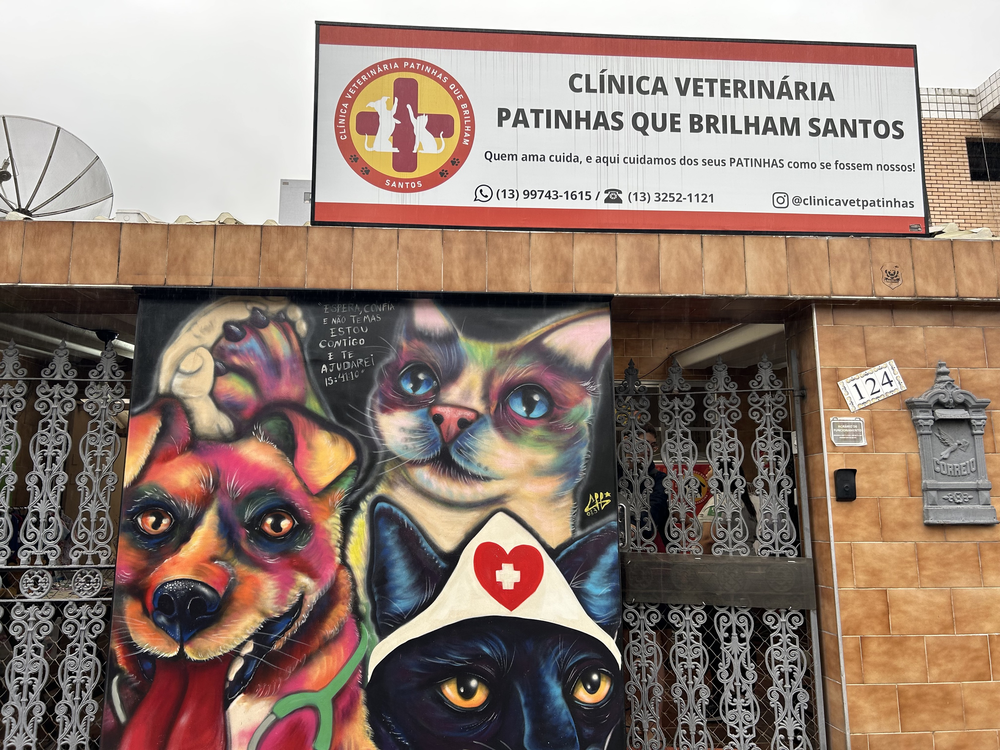

A Viva bicho possui três pilares: castração, doação responsável e, conscientização da população, eles não tem abrigo próprio, porém você ainda pode doar.

Patinhas que Brilham
A Ongs patinhas que brilham tem o objetivo de resgatar e tratar animais. Você pode doar, porém você também pode
ajudar apenas dando carinho e atenção para os animais.